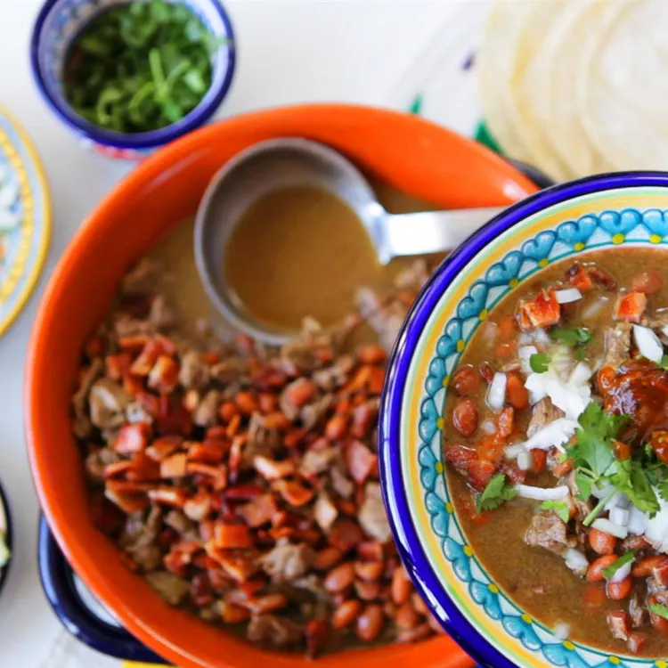

Carne en su Jugo Recipe

Description
Carne en su jugo is a Guadalajara favorite. Small pieces of flank steak are cooked in their juices, then mixed with whole beans and crispy crumbled bacon. It makes me feel at home!
Ingredients
- 6 slices of bacon
- 3 cups water
- 4 fresh tomatillos, husks removed
- 3 serrano chile peppers, seeded and chopped
- 1 clove garlic, peeled
- 2 pounds flank steak, cut into 1/2-inch squares
- 1 cube chicken bouillon
- 2 (15.5 ounce) cans pinto beans
- 1/2 onions, chopped
- 6 tablespoons chopped fresh cilantro
- ground black pepper
- 1 lime, cut into 6 wedges
Steps
Step 1
- Place bacon into large skillet and cook over medium-high heat, turning occasionally, until even browned
- Cook for 10 minutes
- Drain bacon slices on paper towel
- Crumble bacon and set aside
Step 2
- Combine water, tomatillos, serrano peppers, and garlic in a small saucepan over medium-high heat; bring to a boil, cover, and simmer for 10 minutes.
- Remove from heat and allow to cool.
- Transfer contents to a blender; blend until smooth and set aside. (You can skip the simmering step and blend raw tomatillos, peppers, and garlic with water and a few pieces of browned flank steak if you like.)
Step 3
- Place a nonstick skillet over medium-high heat; cook and stir flank steak in the hot skillet until completely browned.
- Pour tomatillo mixture over beef and bring to a boil.
- Stir in chicken bouillon and reduce heat to medium. Cover the skillet and simmer until tender, 30 minutes to 1 hour.
Step 4
- Meanwhile, heat pinto beans in a saucepan over medium heat until warm; reduce heat to low to keep warm until needed.
Step 5
- Stir bacon and pinto beans into flank steak mixture; divide mixture between 6 bowls.
- Garnish each with onion, cilantro, black pepper, and a lime wedge.